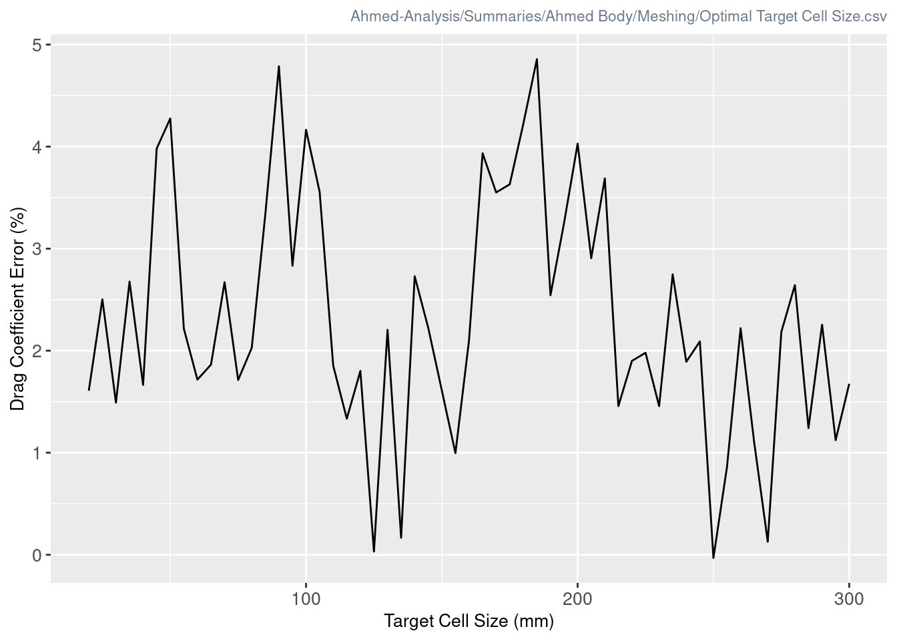

Optimizing Aerodynamic CFD Settings for FSAE
An Ahmed Body Analysis
Introduction
TODO
One of the most time-consuming parts of FSAE is the endless simulations you must do in order to predict how certain parts of the car will behave, and no sub team does more simulations than the aerodynamics sub team. Any time you make any minute change to a single aerodynamic part you run a CFD on it to get an estimate of the aerodynamics of the part, and if its not up to par you edit the part and try again. This is an extremely time consuming process, as not only do parts go through countless iterations, but the actual simulation time for one part can take upwards of 5 hours depending on the complexity, which is far from ideal.
As such, we want to figure out how to reduce the times we take to simulate a single part by as much as possible, which we will accomplish through the analysis of an Ahmed Body. To briefly explain what an Ahmed Body is: it is a generic car body that is largely used to test simulation parameters, and was first described by Ahmed in 1984 [1]. Therefore it stands to reason that any optimization made to the accuracy and simulation time of the Ahmed Body may also cause similar optimization’s in an actual FSAE car model.
Thus, the purpose of this report is to analyze which parameters improve the CFD time of the Ahmed Body, and to then translate those findings to an FSAE car model. From there, we will iterate upon the parameters for the FSAE cars if required, until they reach a TODO
Simulation Setup
For our analysis we will be using the 25º Ahmed Body, as its the one most commonly used in simulations. Now, in order to properly analyse the Ahmed Body, we first need create a proper simulation. Luckily we have already done that, with a simulation file located at ‘Ahmed-Analysis/Car_Analysis_2.0.sim’ (please note this file was made in and for Star CCM+. Any other CFD program will likely not work) [2].
Unfortunately, there are a lot of things that go into setting up this simulation, way too many settings to completely cover in this report. As such, an alternative report generated by Star CCM+ has been added to the Github Repository, as well as a ton of images that should hopefully show every setting used in the simulations in the folder ‘Ahmed-Analysis/Setup’ [2].

However, we will still cover the most important parts of the simulation set up, such as the parameters, tunnel information, and physics settings.
Tunnel Parameters
Firstly, we should describe what exactly the parameters we are utilizing are. There are two significant sub-sects of parameters: tunnel parameters, and meshing parameters. The tunnel parameters are defined as “Back Offset, Front Offset, Side Offset, Top Offset,” as is seen in the images provided.


Meshing Parameters
The meshing parameters are a little more nuanced, as there are once again three categories: meshing parameters that affect the entire mesh, parameters that only affect the tunnel mesh, and parameters that only affect the Ahmed body mesh.
Entire Mesh
- Base Cell Size
- Min Cell Size
- Max Cell Size
Tunnel mesh
- Target Cell Size
Ahmed Mesh
- Ahmed Body Target Cell Size
as you can see, the only significant difference in the meshing of the Ahmed Body and the tunnel is the target cell size. This allows us to make the Ahmed Body much more refined than the tunnel mesh, something very important for lowering the total number of cells in the mesh.
Tunnel / Flow / Physics
Lastly, a few pieces of fairly important information regarding the actual simulations. Most physics / tunnel / fluid settings are left as their default values, however the most notable of these settings, or significant changes, are listed below:
- Tunnel Inlet Velocity: 40 m/s
- Reference Pressure: 101.325 kPa
- Turbulence: K-Epsilon
- Flow: Segregated
- Fluid: Air
- Fluid Density: 1.225 kg/m3
- Fluid Dynamic Viscosity: 1.8375E-5 Pa-s
Furthermore, it should be noted that all simulations ran on 6 ‘processes,’ inside of Star CCM+ (I have no idea what that means, however).
Hardware
<<<<<<< HEAD:Report.htmlAlthough hardware should be the least of our worries when it comes to simulations (ie. all results should be true relative to the pc specs) it is still important that I include my own pc specs for the sake of documentation.

Easily the largest variable for the simulation time is the specs of the hardware running the simulation. As such, I will be including my own:

Ahmed Body
Benchmark Simulation
Parameters
<<<<<<< HEAD:Report.htmlThe following parameters were provided to me by my Aero subteam leader, Raza Gillani, and will serve as our benchmark parameters
| Meshing |
|
| Tunnel |
The following parameters were provided by the Aero Club leader Raza Gillani and will serve as our benchmark parameters Meshing Tunnel
|
Mesh
These parameters gives us the following mesh:


Humorously, the benchmark mesh is so fine that it actually creates Moiré Patterns.
Now its very apparent that this is an extremely inefficient mesh, as it contains 13.3m cells [2]. In fact, this file took 200 minutes to simulate through 1000 iterations [2], which is insanely inefficient for a shape as simple as the Ahmed Body.
Simulation Results
Despite this, the simulation gave the following results:


The most notable value from this graph is the Drag Coefficient (cd A), which ended up being 0.29750 [2], this coefficient is the primary value we will be focusing on for. For reference, in Ahmed et als. paper [1], the drag coefficient was measured to be roughly
\[ Cd = 0.285 \] meaning that the drag coefficient in our benchmark is approximately 95.7% of the value defined in Ahmed et als paper [1]
Optimizing Meshing
Optimizing the meshing of the simulation is the most significant change we can make - as more cells results in slower simulation times, but also theoretically more ‘accurate’\(^\ast\) results. Therefore, to get an accurate display of data we need to simulate a wide range of cell counts.
\(^\ast\)it should be noted that ‘accuracy’ is a misnomer here. I am simply referring to how close the results are compared to those in Ahmed et als. paper [1]
Optimal base and Ahmed Body cell sizes
One way to adjust the cell count of our simulation is to adjust the ‘Base Cell Size’ and ‘Ahmed Body Target Cell Size’ parameters.
From this graph two things become very apparent: firstly, larger base sizes are significantly less chaotic than smaller sizes, making them much better for the purposes of FSAE. Furthermore, these larger base sizes will also take much less time to simulate than smaller options, which is exactly what we want. Secondly, a smaller Ahmed target size consistently results in lower drag coefficient errors. This smaller Ahmed target size does result in slightly slower simulation times, however that increase in simulation time is well worth the increased accuracy.
Due to these results, for all future parameter iterations we will use
- Base = 300mm
- Ahmed Target Size = 5mm
Optimal target cell size
The final mesh optimization we could theoretically make is that of the tunnel mesh target size. Larger target sizes encourages star to try and make more cells large.

And as we can see from this graph, there is essentially no correlation between our target cell size and the Drag Coefficient Error. But this is actually an expected behaviour since the target cell size barely affects the wake and does not affect the Ahmed Body at all, both of which being the most important parts for the drag coefficient. This means that changing the target cell size primarily affects the tunnel cells outside the wake, and only changes the wake cells sizes a tiny amount.
However, something interesting to note is that both target sizes 125mm and 250mm reached a cd*A of 0.285 ± 0.0009 on their first runs, which are overwhelmingly accurate results, especially for simulations that only took 26 minutes. The most perplexing thing is that these two consistently get these results, meaning that the results were not just a random fluke. This indicates that something about these specific target cell sizes are optimal for the current settings, however we fail to understand why they work so well.


A final observation is that target cell sizes that were the faster to simulate were all directly in the middle of the tested sizes, that being 145-215mm, all taking 20-15 minutes to sim.
Due to these results, for all future parameter iterations we will use Target Cell Size = 125mm
Optimizing Tunnel Offsets
We will be taking a single liberty when simulating tunnel parameters, in that we will only go to the benchmark tunnel sizes. The reason for this is that larger tunnels simply get way too complex to simulate in a reasonable time, which is what we are looking for in our analysis. Furthermore, since the results in the target cell analysis gave us a result that is essentially 100% accurate with the benchmark tunnel sizes, we can disregard any sizes bigger than the benchmark since we cant get any more accurate.
Front and Back Offsets
This gives us two potential candidates for our offsets: 3.5x4m front-back offsets which resulted in a 0.2844 cd, or 3.5x8 front-back offsets, which gave a 0.28506 cd. Both of these sims took an essentially equivalent amount of time to simulate, however it is likely that for an actual FSAE car that the former option would be more desirable, both for its accuracy and potential speed.
Something else to mention is that the sim time for the above graphs was ~40-50 minutes. This is not accurate. I believe the reason that these times are so high compared to all the previous simulations is due to hardware error. When I checked my CPU usage after those simulations it was consistently at 90-100%, which is very bad. For reference, all other sims had about 20-40% CPU usage, which indicates to me that something was off during the sims. These issues were fixed for the following parameter simulations (Side - Top), as a simple PC restart seemingly fixed it. Furthermore, the following sims once again took ~20 mins, which further demonstrates that the ~45 minute simulation time for the previous sims was due to outside factors, and not the parameters themselves.
Side and Top Offsets
The setting that resulted in the lowest drag coefficient error was the ones used in the benchmark, where side = 2m and top = 3m. However, there are various combinations that will work, especially because every simulation took right around 23 minutes. This means that (at least for an Ahmed Body and our parameters) the side/top offsets do not have as much of an impact as other parameters.
Comparing our Results
Parameters and Results
<<<<<<< HEAD:Report.html| Parameter | Benchmark Values | Refined Values |
|---|---|---|
| Front Offset | 4 m | 4 m |
| Back Offset | 9 m | 3.5 m |
| Side Offset | 2 m | 2 m |
| Top Offset | 3 m | 3 m |
| Base Cell Size | 20 mm | 300 mm |
| Min Cell Size | 3 mm | 3 mm |
| Max Cell Size | 100 mm | 350 mm |
| Target Cell Size | 20 mm | 125 mm |
| Ahmed Body Target Cell Size | 5 mm | 5 mm |
| Cell Count | 13386643 | 1752373 |
| Mesh Time [mins] | ? | 0.63645 |
| Simulation Time [mins] | 208.96 | 23.332 |
| Drag Coefficient | 0.29750 | 0.28512 |
| Lift Coefficient | 0.38623 | 0.35885 |
| Drag Coefficient Error | 95.798% | 99.958% |
These results are absolutely astonishing. We obtained a Drag coefficient error that is 99.958% the value in Ahmed et als. paper [1], 4% better than our benchmark, and it took us 10x less cells and 10x less time using these refined values.
Relative Parameters
Something important to note is that its possible the settings used for the Ahmed Body work better relatively than absolutely - ie.) since the Ahmed Body model is much smaller than an FSAE car model, the offsets and cell sizes might not have the same effect. As such, below are the calculated relative parameter values.
<<<<<<< HEAD:Report.html| Dimensions | Ahmed Body Dimensions |
|---|---|
| Length (m) | 1.044 |
| Width (m) | 0.389 |
| Height (m) | 0.288 |
| Frontal Area (m^2) | ? |
| Parameter | Equation | Refined Relative Values |
|---|---|---|
| Front Offset | \(\frac{4.0}{\text{Length}}\) | 383.14% |
| Back Offset | \(\frac{3.5}{\text{Length}}\) | 335.25% |
| Side Offset | \(\frac{2}{(0.5\cdot \text{Width})}\) | 257.07% |
| Top Offset | \(\frac{3}{\text{Height}}\) | 1041.6% |
| Base Cell Size | \(\frac{(300)^2}{\text{Front. Area}}\) | ? |
| Min Cell Size | \(\frac{(3)^2}{\text{Front. Area}}\) | ? |
| Max Cell Size | \(\frac{(350)^2}{\text{Front. Area}}\) | ? |
| Target Cell Size | \(\frac{(125)^2}{\text{Front. Area}}\) | ? |
| Ahmed Body Target Cell Size | \(\frac{(5)^2}{\text{Front. Area}}\) | ? |
Visuals
Mesh:


Scalar:


It is important that Figure 10 contains a major difference, in that because the benchmark shows how the air is behaving way farther behind the Ahmed Body. As such, if you are interested in those kinds of results - in that you wish to analyze the airflow multiple meters behind your body - we recommend using a longer back offset than we used.
FSAE Cars
Applying Our Results to FSAE
The purpose of all of our analysis on the Ahmed Body was to hopefully improve the CFD times for FSAE cars while retaining (or improving) the accuracy via the drag coefficient. Therefore to see if we were successful in our endeavor we will do two simulations: one with the benchmark parameters, and one with the most efficient parameters we found. If the parameters we found prove to not be as effective as the benchmark parameters, we will do a second test where we change the parameter values from absolute to relative. The reasoning for this is that the size of Ahmed Body is different than that of an FSAE car, and thus would show different properties for the same parameters, and hopefully using the relative values found in Table 2.
Test 1
<<<<<<< HEAD:Report.htmlBelow is the comparison for the values used in the test
| Parameter | Benchmark Values | Absolute Refined Values |
|---|---|---|
| Front Offset | 4 m | 4 m |
| Back Offset | 9 m | 3.5 m |
| Side Offset | 2 m | 2 m |
| Top Offset | 3 m | 3 m |
| Base Cell Size | 20 mm | 300 mm |
| Min Cell Size | 3 mm | 3 mm |
| Max Cell Size | 100 mm | 350 mm |
| Target Cell Size | 20 mm | 125 mm |
| Ahmed Body Target Cell Size | 5 mm | 5 mm |
Test 2
References
[1]
Ahmed, S. and Ramm, G. and Faltin, G., “Some Salient Features of the Time-Averaged Ground Vehicle Wake,” SAE Technical Paper 840300, 1984. https://doi.org/10.4271/840300
[2]
Campen, J., “Ahmed-Analysis,” 2024.